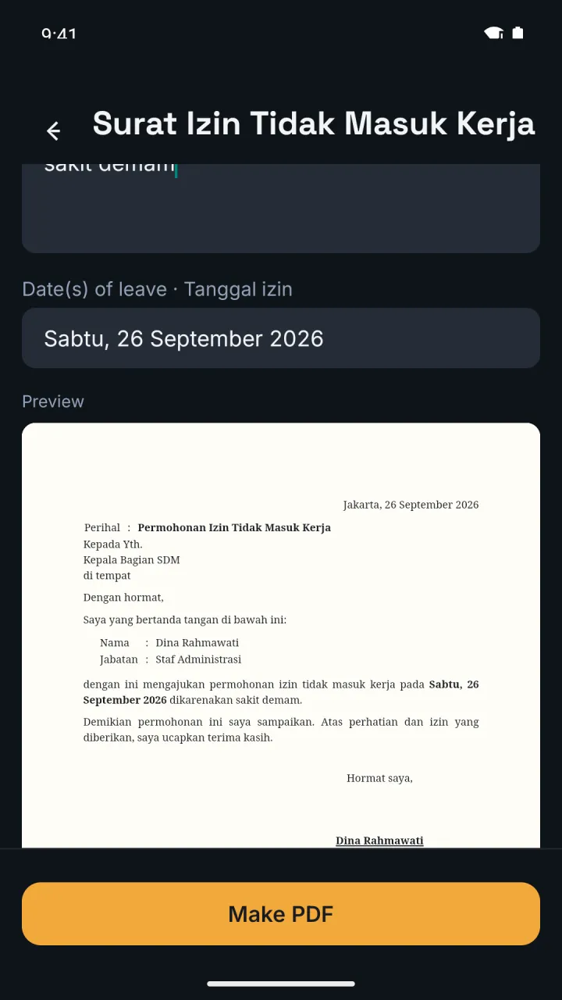
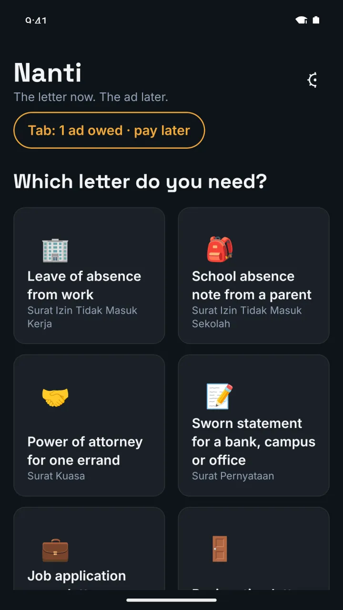
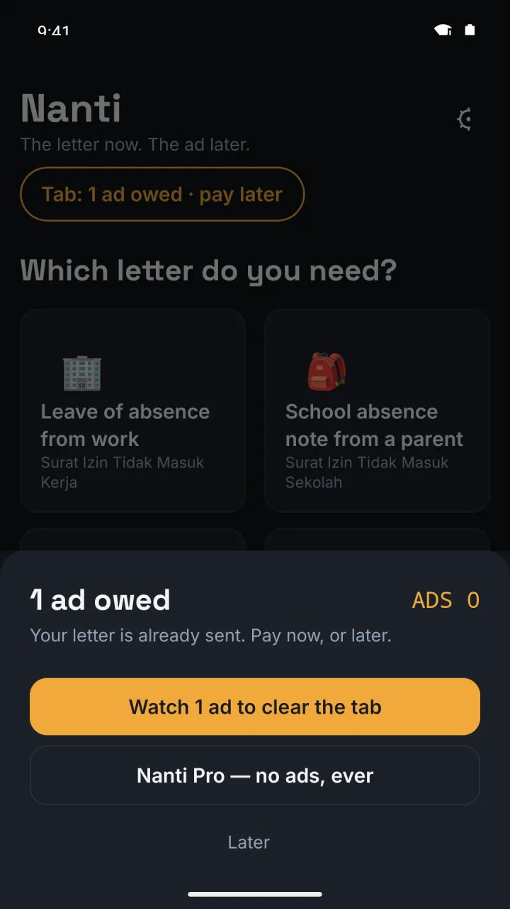
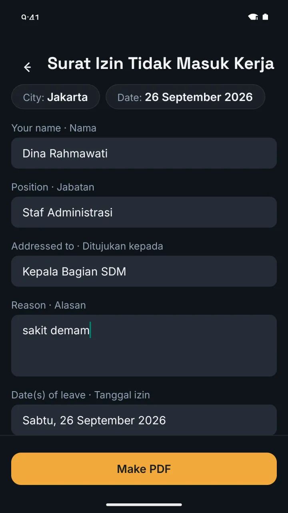

Nomor:Shipaton 2026 / Catvertising AwardLampiran:8 letters · 1 tab · 81 testsPerihal:An ad that comes after the letter
The letter leaves first. The ad waits its turn.
Dina needs a leave letter in HR's WhatsApp before work starts. Nanti fills 8 kinds of formal Indonesian letter from 5 fields, hands her the PDF — and only then writes 1 ad on a tab. Never 2. Only RevenueCat's server can mark it paid.
Tembusan — the honest state, 2026-09-26: a rewarded ad has not yet settled on a device (G1 not run) · Pro products not yet created · no demo video · Play listing not live. Dina, PT Sinar Nusantara Abadi and every name on this page are fictional samples.
Jakarta, 15 September 2026
Perihal:Permohonan Izin Tidak Masuk Kerja
Kepada Yth. Kepala Bagian SDM, PT Sinar Nusantara Abadi di tempat
Dengan hormat,
Saya yang bertanda tangan di bawah ini:
Nama:Dina RahmawatiJabatan:Staf Administrasi
dengan ini mengajukan permohonan izin tidak masuk kerja pada Selasa, 15 September 2026 dikarenakan sakit demam, disertai surat keterangan dokter.
Hormat saya,Dina Rahmawati
Tab: 1 ad owed · pay laterSettled · ADS 0 → 1
LUNASADS +1pressed only by RevenueCat's server — not yet seen on a device
Rule preview, drawn by this page — the app has not yet shown this state on a device.
0ways for the app to pay its own tabnpm run ablation
299,592settle paths walked; "settled" only via "verified"README.md · JUDGE.md
Lampiran 2 · the demo, shown twice
Five fields in. A correct letter out.
Left: the release APK on an emulator. Right: the same template, rendered by the repository's own CLI — the exact HTML the PDF is printed from. No keys, no network.

1 · fill — the live paper preview

2 · shared — the tab reads 1

3 · next letter — settle, Pro, or later
Screens: release APK on an Android emulator, 2026-09-26, offline — no ad was requested.
list:8 letters, 5 fields eachdemo 1:the letter on the left, as the HTML the PDF printsablation:0 client-side settle incrementstest:81 passedG1:not run — no settle line to replay yet
build/ · captured 2026-09-26 14:17 UTC
npx tsx bin/surat.ts listizin-kerja Surat Izin Tidak Masuk Kerja — nama, jabatan, tujuan, alasan, tanggalIzin
izin-sekolah Surat Izin Tidak Masuk Sekolah — namaWali, namaSiswa, kelasSekolah, alasan, tanggalIzin
kuasa Surat Kuasa — pemberi, penerima, keperluan, instansi, masaBerlaku
pernyataan Surat Pernyataan — nama, nik, alamat, isi, keperluan
lamaran Surat Lamaran Kerja — nama, posisi, perusahaan, pendidikan, lampiran
pengunduran-diri Surat Pengunduran Diri — nama, jabatan, tujuan, tanggalEfektif, alasan
cuti Surat Permohonan Cuti — nama, jabatan, tujuan, jenisCuti, tanggal
permohonan Surat Permohonan — nama, instansi, hal, alasan, lampirannpx tsx bin/surat.ts demo 1<p class="right">Jakarta, 15 September 2026</p>
<tr><td>Perihal</td><td>:</td><td><strong>Permohonan Izin Tidak Masuk Kerja</strong>…
<p>Kepada Yth.<br>Kepala Bagian SDM, PT Sinar Nusantara Abadi<br>di tempat</p>
…
<td>Hormat saya,<br><div class="name">Dina Rahmawati</div></td>npm run ablationablation: 0 client-side settle increments in src/ (must be 0)npm test Test Files 8 passed (8)
Tests 81 passed (81)G1 · a rewarded ad settling on a device — not yet run (docs/SPIKE.md)
Lampiran 3 · the tab, part by part
An ad placed after the value — and capped at one.
PDF first
The share sheet opens with the finished A4 letter — kop, perihal, "Kepada Yth.", "Hormat saya," — before an ad is ever mentioned. The share target shows a real file name, Surat-izin-kerja-Dina-….pdf, not Print_xxx.pdf.
expo-print → shareAsync

The tab only reads
debt = clamp(exported − ADS, 0, 1). The app counts letters; the ad balance lives on RevenueCat's server.
getVirtualCurrencies
Settled by the server
AdMob's server-side verification calls RevenueCat, which grants ADS +1; the app polls, it never grants.
Built and in the bundle; not yet run on a device.generateRewardVerificationToken · pollRewardVerification
Ads beside subscriptions
Five ad-lifecycle events per impression go to RevenueCat, so ad revenue and Pro revenue are meant to meet in one customer.
No ad has been served yet — no revenue rows exist.Purchases.adTracker × 5
Pro clears it for good
Monthly or lifetime through a RevenueCat paywall at placement tab_locked; entitlement pro hides the tab.
Configured in code; the products are not yet created.getCurrentOfferingForPlacement('tab_locked')
No ad to show? No debt spiral. If no ad can be served, Lanjut dulu delivers the letter anyway and the tab stays at 1 — never 2.
Lampiran 4 · how the tab is settled
The app asks. The server decides.
Lampiran 5 · honest by design
What is not done, in the repo's own words.
"The settle round-trip … is fully built and in the bundle, but has not yet run on a device."
— JUDGE.md · Conditional project
"On a dev build every settle correctly comes back failed and the tab stays — the app never pretends otherwise."
— README.md · Run the app
"The Pro products … are configured in code but not yet created; until they are, the paywall has nothing to sell."
— JUDGE.md · Honest limitations
Lampiran 6 · questions a judge would ask
Ditanyakan — asked.
The six questions we would ask of a post-paid ad. Each answer points at a file you can open.
Has a real rewarded ad settled on a device yet?
No. The G1 spike in docs/SPIKE.md has not been run, so no settle, latency or ad-revenue figure exists. When it runs, the measured number goes on this page — whatever it is.
Can the app mark the ad as watched by itself?
No. There is no client-side write path: npm run ablation prints 0, and 299,592 settle-machine paths reach "settled" only through "verified". The tab is clamp(exported − ADS, 0, 1), and ADS is a RevenueCat virtual currency the app only reads.
What happens if no ad is available?
Lanjut dulu — the letter is delivered anyway and the tab stays at 1. It never becomes 2.
Can I buy Pro today?
Not yet. The products (nanti_pro_monthly with a 7-day trial, nanti_pro_lifetime), offerings, the tab_locked placement and the paywall are configured in code but not yet created in the RevenueCat and Play dashboards.
Where do I install it?
The Google Play listing is not live yet (production upload in progress). DEMO.md has the dev-build path, and the judge page has the 30-second path with no setup.
Who are Dina and PT Sinar Nusantara Abadi?
Fictional samples. Every name in the templates, screenshots and this page is invented.